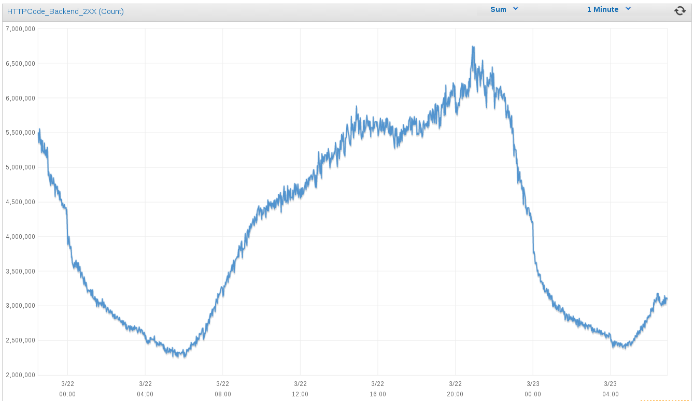

En muchas empresas hay departamentos de arquitectura cuya misión es decidir cómo se va a organizar cada proyecto de software. Deciden el diseño a alto nivel, en cuántas capas se dividirá, qué base de datos usar y otros detalles importantes.
¿Por qué cambiar la base de datos en cada proyecto? ¿Por qué no se usa siempre la misma? Para construir edificios no existe un material perfecto: a veces es mejor la piedra, otras el ladrillo y otras incluso el acero. Tampoco hay una forma perfecta para todos los edificios: cuadrados, rectángulos, cilindros y semiesferas se comportan de forma distinta bajo la carga. Lo mismo ocurre con los programas de software: cada uno tiene unas restricciones operacionales diferentes, y se comporta mejor en ciertas circunstancias.
Qué es la arquitectura
Puede que nos ayude a centrar la discusión si definimos qué es este negocio de “arquitectura” en software.
En esencia se trata de dividir el sistema en bloques de alto nivel, y ordenar las relaciones entre ellos. La organización en componentes suele derivar en la organización física de las máquinas y la elección de lenguaje y programas auxiliares, como por ejemplo qué base de datos usar. De ahí vienen cosas como la arquitectura en tres capas que se popularizó hace años, o la moda más reciente de usar gestores de colas en sistemas escalables.
Curiosamente, es más raro que en la arquitectura se incluya el diseño a alto nivel del propio software, por ejemplo: la división en módulos de npm o en librerías, cómo se dividen los servicios de una API en el código o qué hacer con el código compartido entre diferentes programas. Tampoco se suelen discutir asuntos más de DevOps como la forma de desplegar el código o la creación de entornos de integración, ya que suelen caer del lado del departamento de producción. Así que por ahora nos limitaremos a considerar la organización en máquinas y qué software usar.
Modas en arquitectura
En los años 80 la moda empresarial era tener una minicomputadora (del tamaño de un armario pequeño) y múltiples terminales conectados. La llegada de los ordenadores “personales” fue una revolución, ya que hasta entonces era impensable darle un ordenador en exclusiva a un trabajador.
En los 90 se popularizaron las arquitecturas cliente-servidor. Se separaban así los programas que residían en un servidor y que generaban respuestas, de los clientes que utilizaban estas respuestas. Poco después llegarían protocolos de comunicación entre servidores como CORBA y un poco más tarde XML.
A principios del siglo XXI llegaron las arquitecturas de tres capas: capa de presentación, capa de lógica y base de datos. Era un refinamiento del paradigma cliente-servidor donde se separaba el repositorio de datos, la lógica de negocio y la presentación de la información. También se inventó el ridículo Enterprise Service Bus, que empezó a infectar los diagramas corporativos allá por 2002, y el modelado de procesos de negocio que por suerte parece que ha caído en desuso.
En los años 10 las bases de datos NoSQL han adquirido protagonismo. Los servidores sin estado son de uso común, al igual que los gestores de colas. Son mejoras de este tipo las que han permitido la creación de servicios escalables más allá de lo que se creía posible en décadas pasadas.
En general, un sistema de software suele poder fecharse con bastante precisión sólo con ver la arquitectura que implementa. No deja de ser curioso que se deje al arbitrio de modas un asunto tan serio como la arquitectura de sistemas, sobre todo en empresas grandes. Lo cierto es que cuantos más elementos seamos capaces de utilizar, más flechas tendremos en nuestro carcaj para cuando las necesitemos.
Perfección en arquitectura
Los diseños clásicos de los templos y teatros griegos siguen siendo admirados casi 2500 años después de su construcción. Así que, ¿por qué no seguimos construyendo como ellos? Los materiales cambian, las técnicas avanzan, y las necesidades de los ocupantes también.
En la arquitectura de sistemas de software también se mejora constantemente. Si dominamos nuevas técnicas seremos más versátiles como profesionales. Pero no es ése el motivo real por el que la arquitectura perfecta no existe.
Cada proyecto tiene su ámbito de operación, y su personal asignado. Construir una página personal que va a recibir unas pocas visitas al día usando Erlang, un lenguaje diseñado para sistemas telefónicos de alta concurrencia, es tan ridículo como querer hacer un clon de Twitter en Visual Basic. De ahí que tengamos que conocer los requisitos funcionales y operativos de un sistema antes de poder empezar a hablar de arquitectura.
Requisitos cambiantes
En las inmortales palabras citadas por Steve McConnell en Code Complete:
Los requisitos son como el agua: es más fácil construir sobre ellos cuando están congelados.
Por desgracia, la vida es dura y los requisitos cambian. Llega un momento de la vida en la que todo ingeniero de software comprende que hay valor en permitir que los requisitos cambien: pretender comprender a la perfección un sistema antes de empezar a construirlo no sólo es una quimera; además es una pérdida de tiempo. Es raro el negocio donde se conocen a la perfección los requisitos de los clientes antes de empezar a darles servicio, y más raro aún dar con la tecla correcta a la primera iteración.
Un sistema de software tiene que poder evolucionar durante su vida útil. Esto significa responder a requisitos cambiantes sin excesivas remodelaciones.
Requisitos funcionales
Empecemos con una anécdota, en este caso con trasfondo militar. El avión bombardero B-52 stratofortress empezó a operar en 1952 y las últimas unidades se construyeron en 1963; actualmente 76 aparatos siguen en servicio tras más de seis décadas de actualizaciones. Durante este tiempo se han actualizado para usar motores turbofan y combustible alternativo, lanzar armas nucleares y misiles inteligentes guiados, se han reparado múltiples problemas estructurales, mejorado la aviónica, y habilitada la visión noctura para los pilotos. Se estima que podrá seguir en servicio activo al menos hasta 2040. En resumen: es un bombardero diseñado durante la guerra de Corea y fabricado mientras JFK era presidente, que seguirá en uso durante al menos otros 25 años.
Como ingenieros, nuestra mayor aspiración es seguramente que lo que construyamos dure en el tiempo. Para eso es necesario que pueda actualizarse y mejorarse, añadiendo nuevas funcionalidades según se necesiten. Gracias a la magia del software no tenemos que sacar nuestros sistemas del servicio para actualizarlos; basta con hacer una copia del código y reemplazar el de producción cuando están listas las mejoras. Así que nos resulta relativamente fácil que nuestro software haga cosas nuevas. ¿O no? Sólo tenemos que extenderlo para que haga cosas más allá de su propósito original. Excepto cuando no se puede.
Todos conocemos algún proyecto que ha pasado su fecha de expiración. Nadie quiere tocar el código porque se ha convertido en una masa siniestra de spaghetti. Las modificaciones son inmanejables y cada vez que se hace un cambio en un sitio, se rompe algo en otro aparentemente no relacionado.
Nuestra misión es mantener el software flexible para que podamos seguir añadiendo funcionalidades. Eso lleva algún esfuerzo extra, sin duda, pero la recompensa es grande cuando el proyecto es realmente exitoso.
Requisitos operacionales
Las circunstancias en las que nuestro sistema tiene que trabajar cambian, para bien o para mal. A menudo necesitamos ampliar el rango operativo del sistema sin añadir funcionalidades nuevas.
Planificación de capacidad
Un caso importante es la planificación de la capacidad necesaria para dar servicio, lo que se conoce en inglés como capacity planning. Un producto exitoso a menudo dobla el número de usuarios en un año, o incluso en meses: en 2013 Uber crecía al 400% por año, mientras que su competidora Lyft lo hacía a un ritmo todavía más vertiginoso que suponía multiplicar su facturación por 20 al año.
¿Es posible que el mismo sistema sea capaz de crecer para soportar todo el tráfico que le echemos? Si usamos la planificación de capacidad tradicional seguramente intentemos predecir el tráfico que vamos a tener durante todo el año en base a los datos del año anterior, para ir presupuestando el número de servidores que vamos a necesitar. También necesitaremos redimensionar todos nuestros componentes para aguantar el tráfico extra. Esto, que era práctica estándar hace unos años, ahora sería un suicidio: la tasa de crecimiento puede ser exponencial y doblarse cada poco tiempo, aunque también puede mantenerse estacionaria de repente durante meses.
¿Cómo predecir el tráfico que tendremos, no ya al final de un año, sino sólo dentro de un mes? Respuesta: no podemos. Sólo podemos intentar ir un paso por delante del tráfico, responder rápido a los cambios y no adelantar demasiado los acontecimientos.
Caso práctico: MediaSmart Mobile
Peticiones por segundo en MediaSmart Mobile
Esta gráfica muestra los picos de peticiones por segundo que hemos recibido en MediaSmart Mobile desde 2013. Durante el primer año el volumen fue creciendo linealmente, pasando de 2 a 12 krps (miles de peticiones por segundo). A principios de 2014 pasó algo curioso: el ritmo se aceleró, y pasamos de 15 a 100 krps a finales de año. Pero en 2015 el ritmo está decelerando de nuevo: apenas pasaremos de 210 krps antes de final de año.
Si a principios 2014 hubiéramos pintado una línea recta para predecir el tráfico del año, habríamos calculado alrededor de 25 krps (definitivamente por debajo de 30 krps); a final de año teníamos 100 krps. Por otra parte, si hubiéramos seguido la curva exponencial para 2015, a final de año habríamos andado por 600 krps; la cifra real anda cerca de las 200 krps.
Bases de datos
Cada base de datos tiene varias características que la hacen adecuada en ciertas situaciones, y que la descartan en otras. Entre ellas:
Rango operativo: ¿cuántas peticiones por segundo admite?
Elementos funcionales: ¿qué tipos de datos permite guardar? ¿Qué tipo de consultas se pueden hacer?
Tiempo de respuesta: ¿cuántos milisegundos se tarda en servir cada petición?
Condiciones de operación: ¿cuántos servidores (y de qué tipo) se necesitan como mínimo? ¿Hasta cuántos escala?
Durante mucho tiempo se trabajó bajo el paradigma de “la base de datos perfecta”: un mismo programa que escalara de casi cero (dispositivos muy limitados en recursos, como móviles) a infinito (un cluster con tantos nodos como queramos). Con la llegada de las bases de datos NoSQL asistimos a una explosión evolutiva de bases de datos muy diferentes: en memoria o en cluster; clave-valor o con estructuras complejas; que admiten SQL y que no; etcétera. Cada tipo es adecuado para unas condiciones operativas diferentes, y tienen costes asociados muy distintos.
Costes bajos
Por último, pero no menos importante, tenemos los costes de operación del sistema. Alquilar servidores en la nube no sale barato; si no optimizamos su uso al máximo probablemente tiremos un montón de dinero.
Caso práctico: MediaSmart Mobile
Tráfico diario en MediaSmart Mobile
En MediaSmart el tráfico nocturno solía ser menos de una cuarta parte del pico diario: en la gráfica se aprecia un mínimo de 2.5 millones de peticiones por minuto, frente a casi 7 millones en el pico diario (alrededor de las 8 de la tarde). Nota: Amazon AWS mide las peticiones por minuto, en lugar de las peticiones por segundo que hemos visto arriba. 6M por minuto equivale a 100 krps.
Mantener arrancados los servidores todo el día suponía desperdiciar gran parte de la capacidad, y como en Amazon se paga por hora de servidor los costes eran astronómicos. Es esencial poder usar un número variable de servidores, y eso nos obliga a tener un balanceador de carga que pueda admitir nuevas instancias dinámicamente.
Velocidad del cambio
La velocidad a la que somos capaces de realizar cambios en nuestros sistemas es crítica. Demasiado lento, y no seremos capaces de absorber un tráfico creciente de peticiones o de mantener los costes controlados; demasiado rápido, y nuestro sistema estará caído todo el tiempo.
Si tu proveedor de servidores en la nube sube los precios un 300% de un día para otro, cosa que ha ocurrido en el pasado, ¿cuánto tiempo tarda tu equipo en migrar a un nuevo proveedor?
Y si mañana decides montar un CPD propio y albergar tus propios servidores, ¿cuánto tardarás en replicarlos? ¿Cómo realizarás el cambio en el momento clave para empezar a dar servicio?
La arquitectura fluida
¿Cuál es la solución para acomodar tanto cambio? Nuestra humilde sugerencia es mantener la arquitectura del sistema fluida, sin tomar decisiones que comprometan su integridad. Tenemos que ser capaces de pasar de un estado a otro, intentando dar servicio todo el tiempo.
Al oir esto un arquitecto de los de verdad, de los que juntan piedras, seguramente tendría problemas para contener la risa. ¿Cómo se pueden cambiar las vigas maestras de un edificio mientras los habitantes están viviendo dentro?
Los ingenieros de software tenemos una gran ventaja frente a otras ingenierías más tradicionales: no trabajamos con el mundo real, rígido y frágil, sino con software, que es infinitamente moldeable.
Si encontramos restricciones en esta maleabilidad suele ser porque alguien no ha hecho bien su trabajo. Subiendo de nivel paulatinamente, encontramos cosas como:
código duplicado, donde hay que modificar varios trozos de código para cambiar cualquier cosa, dificultando los cambios;
dependencias cruzadas, que hacen que un cambio en una parte tenga efectos colaterales en partes no relacionadas;
drivers imbricados en múltiples secciones del código, que dificultan migrar bases de datos u otros componentes similares.
Vamos a centrarnos en las restricciones que nos dificultan una migración.
Reversibilidad y termodinámica
En este punto vamos a tomar un desvío que nos llevará de viaje a la intemporal tierra de la termodinámica.
Seguro que has oído hablar de “entropía”: es un término muy popular entre los divulgadores científicos, que a menudo lo corrompen asignándole significados corrientes como “desorden”, “irregularidad” y similares. Es probable que no te sorprenda que la entropía tiene una definición muy precisa, o más bien varias definiciones equivalentes.
No es sencillo calcular la entropía de un sistema, y menos todavía medir los flujos de entropía que ocurren mientras evoluciona.
Por suerte, podemos tomar un atajo: un sistema reversible es, por definición, el que consigue que la entropía se mantenga en el mínimo posible. No por casualidad también es el más eficiente. Y además es muy fácil saber cuándo un sistema es reversible: cuando está en todo momento en equilibrio.
En 2012 exploré en estostresartículos (en inglés) una idea similar a la que he desarrollado aquí: la ingeniería reversible, o cómo trabajar siempre cerca del equilibrio. Las ideas clave son: no malgastar energía, ir lo más despacio que sea posible, y evitar turbulencias.
En resumen, podemos considerar reversible un sistema que puede invertirse sin consumir energía extra. Al mismo tiempo, si revertir el funcionamiento del sistema requiere energía extra, entonces el sistema no es reversible.
Migraciones
Para pasar de una arquitectura a otra normalmente tenemos que realizar un cambio, sea de máquinas, de programas, de código o de datos. Las migraciones son claramente cruciales para nuestro objetivo de tener una arquitectura fluida: si nuestro sistema pasa de un estado a otro suavemente y sin turbulencias, es decir que las migraciones son también fuidas, entonces podremos considerar que tenemos una arquitectura maleable.
Migración sin downtime
Para que cada migración sea fluida es un requisito indispensable que no haya un paso brusco entre un estado y el siguiente. Es decir, que no dejemos en ningún momentode dar servicio. La técnica básica para conseguirlo es la capa de compatibilidad: un elemento intermedio que ponemos entre el código viejo y el nuevo y que facilita la transición.
Supongamos que vamos a migrar un servicio de una máquina a otra. La capa de compatibilidad en este caso será una máquina intermedia (un proxy) que dirigirá el tráfico a una u otra según un parámetro de configuración. Primero redirigiremos los accesos a esta máquina, que los desviará al antiguo servidor. A continuación, cuando estemos preparados redirigiremos el tráfico del proxy a la nueva máquina.
La capa de compatibilidad puede ser también un elemento de software, por ejemplo un driver capaz de hablar con la base de datos antigua y con la nueva, según un parámetro de configuración.
Reversibilidad
También tenemos que tener claro cómo revertir la migración: poder volver a la situación inicial con el mínimo esfuerzo. Idealmente, para revertir todos los cambios sólo tenemos que darle a un botón, cambiar una opción de configuración, modificar un único parámetro, en definitiva: invertir un bit.
var MIGRATION = false;
¿Crees que es posible revertir los cambios de forma tan sencilla? Hay muchos ejemplos de sistemas que son así de fáciles de revertir: el botón de “deshacer” en un programa de edición de textos, o los cambios en un repositorio git usando el comando git revert. Nuestro reto es hacer que un sistema complejo compuesto de varias piezas vuelva a su estado inicial con la misma facilidad.
Por otra parte, queremos (dentro de lo posible) no tener que usar este botón de deshacer, a no ser que la migración sea un fracaso absoluto. Normalmente ante pequeños problemas es más rentable arreglarlos y seguir adelante que volver atrás. Pero tener ese mecanismo de seguridad es tan importante como para un trapecista tener una red debajo, aunque por supuesto no planee usarla cuando sale a la pista.
Tipos de migración
Vamos a ver los tipos principales de migración por encima.
Máquinas: Normalmente cambiar de máquinas no se considera un asunto de arquitectura. Pero si miramos más allá del hierro, a menudo nos encontramos con un sistema operativo más moderno (o incluso distinto), que puede requerir nuevos programas. También puede ser que las máquinas tengan nuevas capacidades que requieren de cambios en el código, como los servidores multicore que nos invadieron hace un par de décadas. Además, cuando las máquinas migradas albergan grandes cantidades de información suele haber una migración de datos asociada.
Programas: Los cambios en un programa que no desarrollamos directamente pueden ir desde un cambio de versión a un cambio completo del programa que usaremos. En el primer caso puede ser que tengamos pequeños cambios de código: por ejemplo, cada actualización de la base de datos Oracle puede requerir pequeños ajustes en las sentencias SQL usadas. Cuando se cambia de programa puede que tengamos que cambiar el driver, o incluso (si es una base de datos) migrar los datos. Por tanto los cambios de programa a menudo llevan aparejados cambios de código y/o datos.
Código: Cuando el código está bajo nuestro control, cada despliegue se convierte de hecho en una migración: de la versión en producción a una nueva. A veces también tienen aparejadas migraciones de datos, por ejemplo cuando hay un cambio de esquema en la base de datos.
Datos: Las migraciones de datos son el ejemplo más claro de cambio que debe manejarse con delicadeza. En este caso hay que mover o redistribuir información, que suele ser lo más delicado en una migración.
Migraciones de base de datos
Como hemos visto, las migraciones de datos son el final de la cadena: cada tipo de migración de arriba puede llevar aparejada una migración de datos, pero no viceversa. Además son delicadas porque podemos perder en un momento información muy valiosa. Vamos a estudiarlas un poco más en detalle.
Hay un par de peculiaridades en los cambios de bases de datos que las hace interesantes. En primer lugar, es bastante sencillo construir una capa de compatibilidad que traduzca las operaciones entre dos bases de datos, incluso aunque tengan modelos internos muy diferentes. Por ejemplo, para hacer que una base de datos tradicional como PostgreSQL se comporte como un almacenamiento clave-valor sólo tenemos que crear una tabla única con un campo clave y otro campo valor de tipo texto.
Otra peculiaridad es que en estas migraciones es importante migrar por separado el acceso y los datos. Normalmente queremos migrar primero los datos, y luego cambiar el acceso; todo ello por supuesto sin downtime.
Los cambios de base de datos son ejemplos muy completos del tipo de migraciones que estamos estudiando. Más adelante vamos a abusar de ellos para ilustrar cada técnica de migración.
Fin (por ahora)
En la siguiente parte veremos varias estrategias que se pueden usar para realizar una migración.